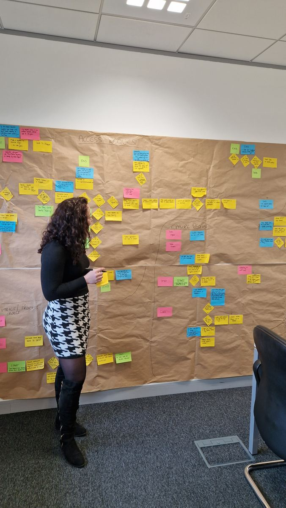

Competing truths
Leadership, specialists and frontline teams are each right about part of the system—but no shared view exists.
Strategy · operations · data · transformation
I help leadership teams understand complex organisational problems that are spread across reports, meetings, functions and people’s heads. We bring the whole picture into view, agree what is actually happening and turn it into practical decisions.
Complexity is not the enemy.
The situations
The work is most valuable where the issue crosses functions, evidence is fragmented and a single workshop or presentation cannot carry the full truth.
Leadership, specialists and frontline teams are each right about part of the system—but no shared view exists.
The programme is busy and reporting is plentiful, yet ownership, confidence or control is quietly deteriorating.
The organisation produces accurate analysis, but the meaning is lost before it reaches the people who must act.
Handoffs, workarounds and hidden dependencies are consuming time, quality and trust without one obvious owner.
Ways to work with Rose
Each engagement has a clear job, a bounded first step and a tangible output.
Signature diagnostic
A focused organisational diagnostic that gets close to the work, listens across roles and turns distributed knowledge into one shared picture people can question and solve together.
From evidence to decision
Turn a complicated body of evidence into a paper, story or briefing leaders can understand, test and act on.
From diagnosis to delivery
Convert agreed priorities into ownership, governance and a practical route through delivery.
Bring Rose into the room
Independent challenge for leadership teams dealing with ambiguity, difficult trade-offs or cross-functional tension.
Selected impact
Client identities are protected where required. The work and outcomes are described as specifically as confidentiality permits.
Worked across programme, quality, supply chain and delivery perspectives to surface how the organisation actually operated, where evidence was fragmented and which dependencies needed leadership attention.
Connected customer experience, process and commercial evidence to help teams focus improvement effort where it mattered.
A practical operational improvement grounded in real process behaviour rather than assumptions made from a distance.

The method
Observe the work and understand how the challenge appears from inside the system.
Keep the contradictions, workarounds and uncomfortable evidence that formal reporting often removes.
Put the process, evidence and perspectives somewhere everyone can see, challenge and improve.
Agree what must change first, who owns it and what a credible sequence looks like.
The wider portfolio
Help evidence travel from technically correct analysis to decisions people understand and act on.
Explore → Artistic practiceCyanotype artworks that preserve memory, music and emotionally charged moments in physical form.
Visit → PublishingA guided journal for spiralling, numbness, change and the slow work of letting go.
Read more →Start with the truth, not a sales call
Use the structured brief to describe what is happening, what is at stake, who sees it differently and why previous attempts have not resolved it. I will tell you candidly whether I am the right person and whether Put It on the Wall is the right starting point.